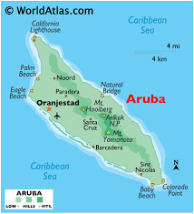
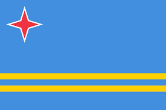

About Aruba
Aruba is a small Caribbean island just north of Venezuela. It’s known for its stunning white-sand beaches, warm weather all year, and friendly locals who welcome visitors from all over the world. People here speak a mix of languages, with Dutch and Papiamento as the main ones.
Island Map & Location
Absolute Location: About 12.5° North latitude and 69.97° West longitude.
Relative Location: Aruba is located in the Caribbean Sea, close to the northern coast of South America and near the islands of Curacao and Bonaire.
Landforms & Topography
Aruba has a unique landscape with lots of interesting landforms. The island is mostly flat, but there are some rolling hills, like the Hooiberg Hill and the Arikok National Park, which is a natural area with rugged terrain, cactus plants, and rocky cliffs.
Water Features
Surrounded by the Caribbean Sea, Aruba is famous for its crystal-clear waters and beautiful beaches like Eagle Beach and Palm Beach. The coastline also has small coves and shallow coral reefs, which make it a great place for snorkeling and diving.
Climate & Biomes
Aruba has a tropical climate, meaning it’s warm and sunny almost all the time. The island doesn’t have a lot of rain, but it does have a rainy season in October and November. The biomes here are mainly desert-like, with lots of cacti and dry grasses.
Flora & Fauna
Aruba’s plant life includes cacti, the famous divi-divi trees that always point west, and other desert plants. Animals on the island include iguanas, colorful lizards, and lots of different bird species. Under the water, you can find sea turtles, coral reefs, and tropical fish.
Natural Resources
Aruba’s main resources are its beautiful beaches and its sunny weather, which make it perfect for tourism. The island also has a small amount of natural minerals and relies on the ocean for desalinated water. Protecting the environment and keeping the island clean are important goals here.
Environmental Challenges
Aruba faces challenges like preserving water, dealing with waste, and managing the effects of climate change, which can cause higher sea levels.
Capital & Major Cities
Capital: Oranjestad
Oranjestad is the main city and capital of Aruba. Other towns include Noord, Santa Cruz, and San Nicolas, each with its own unique character and attractions.
Development & Economy
Aruba’s economy relies mostly on tourism, but it also has other industries like oil refining and some agriculture. Aloe products, like lotions and gels, are also made on the island and exported to other countries.
Main Industries
The tourism industry is the biggest, followed by oil refining, financial services, and aloe production.
Exports and Imports
Aruba exports aloe products and refined oil. It imports food, electronics, and clothing from nearby countries and the U.S.
Culture & Popular Sports
Languages spoken here include Papiamento, Dutch, English, and Spanish. Most people are Catholic, but there are other religions too. Baseball, soccer, and water sports like snorkeling and sailing are popular here.
Government & Leadership
Form of Government: Aruba is a part of the Kingdom of the Netherlands, so it’s a constitutional monarchy. They have their own parliament and are led by a governor who represents the King of the Netherlands.
Flag & Currency
Currency: Aruban Florin (AWG)
Famous People from Aruba
Some famous people from Aruba include Xander Bogaerts, a Major League Baseball player, and Betico Croes, a politician who fought for Aruba's independence within the Kingdom of the Netherlands.